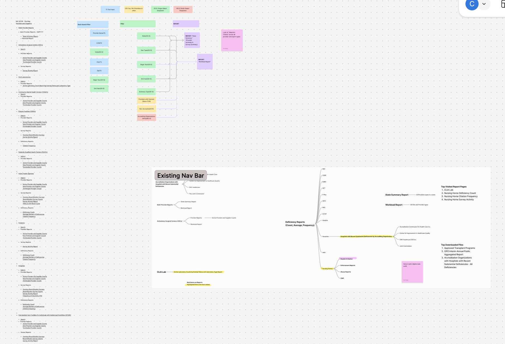
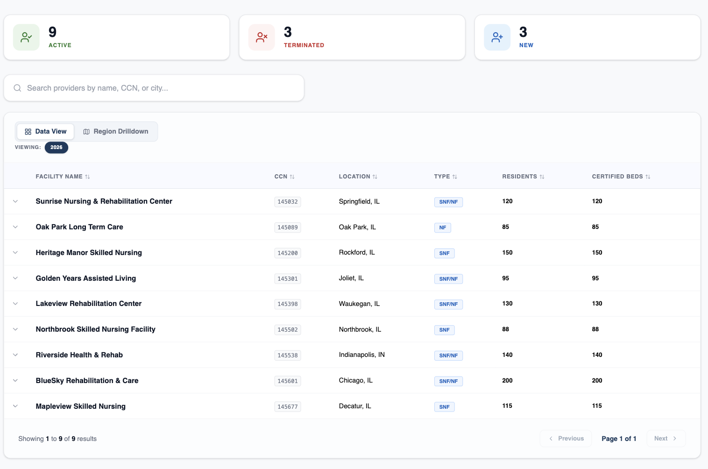
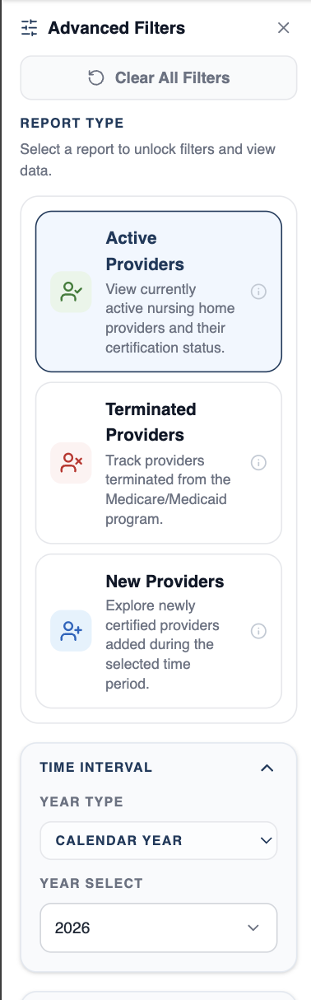

Website Modernization
The work I do is government work, so I cannot include specific names of clients or products. Everything here stays generalized.
The Problem
The client’s website had an outdated design, complicated user flows, and a codebase that was difficult to maintain. People across different areas relied on its reports, so the project involved more than updating how the website looked.
The team was rebuilding the website in React while continuing to maintain the legacy site. I worked on the information architecture, user flows, and design system, with feedback from the client and close collaboration with a developer.
The How of Solving It
I started by going through the existing website and mapping how everything connected. This included which reports belonged to each provider type, what filters they used, and what information they generated.
The main challenge was that the provider types shared some reporting patterns, but also had reports and filters specific to them. I needed to create a structure that felt consistent without removing those differences.
I also conducted interviews with client stakeholders and used a tree test to check whether the proposed navigation made sense. Alongside that work, we reviewed which reports could be combined and where content was repeated.

Brainstorming
Three things shaped the design: reports needed to be easier to find, running a report required too many page redirects, and similar components were inconsistent across the website.
I proposed combining related reports into a shared page, with report selection and filters available in the same workspace. This would keep more of the task together instead of sending users to a new page after every action.
I kept the existing navy and white palette and worked with the developer on a shared design system. The goal was to give us consistent components that could be reused as we added more provider types.
Prototyping
On the legacy website, selecting a provider, choosing a report, applying filters, and viewing results each happened on a separate page.
The redesigned flow starts with a provider overview and uses tabs to organize report types. Within each tab, users can select a report and apply filters, with the table updating as those filters change.
I also proposed two ways to explore the results: a data view for reviewing raw data and a drilldown view for exploring information by category. Expandable table content would show quick details, with a provider details page available for more information.

Testing and Iterating
Clients reviewed the developing website in a QA environment. One issue was that report selection was easy to miss in the sidebar. We kept it there but added a prompt in the table area explaining that a report needed to be selected before results would appear.
We also updated the filter controls. Shorter lists used checkbox groups with “Select All,” while longer lists used multi-select dropdowns.
As more provider pages were added, reusing the design system made them faster to build. Shared component changes could also be applied across pages. The project is still in progress, and improvements to navigation success or report completion time have not yet been measured.

Lessons Learned
I learned that presenting several design options did not always make client decisions easier. Sometimes opinions were split, and sometimes a decision changed after development had started. Presenting one direction with a clear explanation gave us something more specific to discuss and revise.
More frequent client meetings also helped us catch changes earlier.
Working closely with the developer showed me the limits of handing off wireframes without detailed component specifications. Moving those decisions into a shared design system made implementation more consistent and reduced repeated adjustments.
This project is still in progress and will be updated periodically.